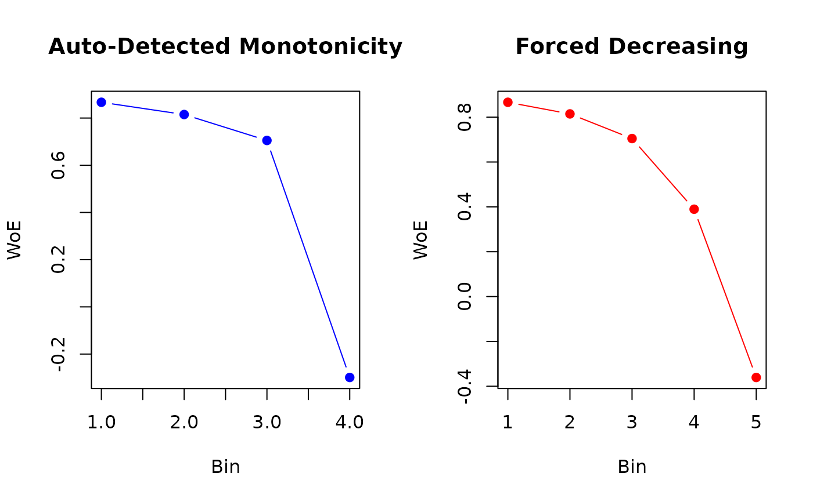

Optimal Binning for Numerical Features Using Monotonic Binning via Linear Programming
Source:R/obn_mblp.R
ob_numerical_mblp.RdImplements a greedy optimization algorithm for supervised discretization of numerical features with **guaranteed monotonicity** in Weight of Evidence (WoE). Despite the "Linear Programming" designation, this method employs an iterative heuristic based on quantile pre-binning, Information Value (IV) optimization, and monotonicity enforcement through adaptive bin merging.
Important Note: This algorithm does not use formal Linear Programming solvers (e.g., simplex method). The name reflects the conceptual formulation of binning as a constrained optimization problem, but the implementation uses a deterministic greedy heuristic for computational efficiency.
Usage
ob_numerical_mblp(
feature,
target,
min_bins = 3,
max_bins = 5,
bin_cutoff = 0.05,
max_n_prebins = 20,
force_monotonic_direction = 0,
convergence_threshold = 1e-06,
max_iterations = 1000
)Arguments
- feature
Numeric vector of feature values to be binned. Missing values (NA) and infinite values are automatically removed during preprocessing.
- target
Integer vector of binary target values (must contain only 0 and 1). Must have the same length as
feature.- min_bins
Minimum number of bins to generate (default: 3). Must be at least 2.
- max_bins
Maximum number of bins to generate (default: 5). Must be greater than or equal to
min_bins.- bin_cutoff
Minimum fraction of total observations in each bin (default: 0.05). Bins with frequency below this threshold are merged with adjacent bins. Must be in the range (0, 1).
- max_n_prebins
Maximum number of pre-bins before optimization (default: 20). Controls granularity of initial quantile-based discretization.
- force_monotonic_direction
Integer flag to force a specific monotonicity direction (default: 0). Valid values:
0: Automatically determine direction via correlation between bin indices and WoE values.1: Force increasing monotonicity (WoE increases with feature value).-1: Force decreasing monotonicity (WoE decreases with feature value).
- convergence_threshold
Convergence threshold for iterative optimization (default: 1e-6). Iteration stops when the absolute change in total IV between consecutive iterations falls below this value.
- max_iterations
Maximum number of iterations for the optimization loop (default: 1000). Prevents infinite loops in pathological cases.
Value
A list containing:
- id
Integer vector of bin identifiers (1-based indexing).
- bin
Character vector of bin intervals in the format
"(lower;upper]".- woe
Numeric vector of Weight of Evidence values for each bin.
- iv
Numeric vector of Information Value contributions for each bin.
- count
Integer vector of total observations in each bin.
- count_pos
Integer vector of positive class (target = 1) counts per bin.
- count_neg
Integer vector of negative class (target = 0) counts per bin.
- event_rate
Numeric vector of event rates (proportion of positives) per bin.
- cutpoints
Numeric vector of cutpoints defining bin boundaries (excluding -Inf and +Inf).
- converged
Logical flag indicating whether the algorithm converged within
max_iterations.- iterations
Integer count of iterations performed during optimization.
- total_iv
Numeric scalar representing the total Information Value (sum of all bin IVs).
- monotonicity
Character string indicating monotonicity status:
"increasing","decreasing", or"none".
Details
Algorithm Overview
The Monotonic Binning via Linear Programming (MBLP) algorithm operates in four sequential phases designed to balance predictive power (IV maximization) and interpretability (monotonic WoE):
Phase 1: Quantile-Based Pre-binning
Initial bin boundaries are determined using empirical quantiles of the feature distribution. For \(k\) pre-bins, cutpoints are computed as:
$$q_i = x_{(\lceil p_i \times (N - 1) \rceil)}, \quad p_i = \frac{i}{k}, \quad i = 1, 2, \ldots, k-1$$
where \(x_{(j)}\) denotes the \(j\)-th order statistic. This approach ensures equal-frequency bins under the assumption of continuous data, though ties may cause deviations in practice. The first and last boundaries are set to \(-\infty\) and \(+\infty\), respectively.
Phase 2: Frequency-Based Bin Merging
Bins with total count below bin_cutoff \(\times N\) are iteratively
merged with adjacent bins to ensure statistical reliability. The merge strategy
selects the neighbor with the smallest count (greedy heuristic), continuing
until all bins meet the frequency threshold or min_bins is reached.
Phase 3: Monotonicity Direction Determination
If force_monotonic_direction = 0, the algorithm computes the Pearson
correlation between bin indices and WoE values:
$$\rho = \frac{\sum_{i=1}^{k} (i - \bar{i})(\text{WoE}_i - \overline{\text{WoE}})}{\sqrt{\sum_{i=1}^{k} (i - \bar{i})^2 \sum_{i=1}^{k} (\text{WoE}_i - \overline{\text{WoE}})^2}}$$
The monotonicity direction is set as: $$\text{direction} = \begin{cases} 1 & \text{if } \rho \ge 0 \text{ (increasing)} \\ -1 & \text{if } \rho < 0 \text{ (decreasing)} \end{cases}$$
If force_monotonic_direction is explicitly set to 1 or -1, that value
overrides the correlation-based determination.
Phase 4: Iterative Optimization Loop
The core optimization alternates between two enforcement steps until convergence:
Cardinality Constraint: If the number of bins \(k\) exceeds
max_bins, the algorithm identifies the pair of adjacent bins \((i, i+1)\) that minimizes the IV loss when merged: $$\Delta \text{IV}_{i,i+1} = \text{IV}_i + \text{IV}_{i+1} - \text{IV}_{\text{merged}}$$ where \(\text{IV}_{\text{merged}}\) is recalculated using combined counts. The merge is performed only if it preserves monotonicity (checked via WoE comparison with neighboring bins).Monotonicity Enforcement: For each pair of consecutive bins, violations are detected as:
Increasing: \(\text{WoE}_i < \text{WoE}_{i-1} - \epsilon\)
Decreasing: \(\text{WoE}_i > \text{WoE}_{i-1} + \epsilon\)
where \(\epsilon = 10^{-10}\) (numerical tolerance). Violating bins are immediately merged.
Convergence Test: After each iteration, the total IV is compared to the previous iteration. If \(|\text{IV}^{(t)} - \text{IV}^{(t-1)}| < \text{convergence\_threshold}\) or monotonicity is achieved, the loop terminates.
Weight of Evidence Computation
WoE for bin \(i\) uses Laplace smoothing (\(\alpha = 0.5\)) to handle zero counts:
$$\text{WoE}_i = \ln\left(\frac{\text{DistGood}_i}{\text{DistBad}_i}\right)$$
where: $$\text{DistGood}_i = \frac{n_i^{+} + \alpha}{n^{+} + k\alpha}, \quad \text{DistBad}_i = \frac{n_i^{-} + \alpha}{n^{-} + k\alpha}$$
and \(k\) is the current number of bins. The Information Value contribution is:
$$\text{IV}_i = (\text{DistGood}_i - \text{DistBad}_i) \times \text{WoE}_i$$
Theoretical Foundations
Monotonicity Requirement: Zeng (2014) proves that monotonic WoE is a necessary condition for stable scorecards under data drift. Non-monotonic patterns often indicate overfitting to noise.
Greedy Optimization: Unlike global optimizers (MILP), greedy heuristics provide no optimality guarantees but achieve O(k²) complexity per iteration versus exponential for exact methods.
Quantile Binning: Ensures initial bins have approximately equal sample sizes, reducing variance in WoE estimates (especially critical for minority classes).
Comparison with True Linear Programming
Formal LP formulations for binning (Belotti et al., 2016) express the problem as:
$$\max_{\mathbf{z}, \mathbf{b}} \sum_{i=1}^{k} \text{IV}_i(\mathbf{b})$$
subject to: $$\text{WoE}_i \le \text{WoE}_{i+1} \quad \forall i \quad \text{(monotonicity)}$$ $$\sum_{j=1}^{N} z_{ij} = 1 \quad \forall j \quad \text{(assignment)}$$ $$z_{ij} \in \{0, 1\}, \quad b_i \in \mathbb{R}$$
where \(z_{ij}\) indicates if observation \(j\) is in bin \(i\), and \(b_i\) are bin boundaries. Such formulations require MILP solvers (CPLEX, Gurobi) and scale poorly beyond \(N > 10^4\). MBLP sacrifices global optimality for scalability and determinism.
Computational Complexity
Initial sorting: \(O(N \log N)\)
Quantile computation: \(O(k)\)
Per-iteration operations: \(O(k^2)\) (pairwise comparisons for merging)
Total: \(O(N \log N + k^2 \times \text{max\_iterations})\)
For typical credit scoring datasets (\(N \sim 10^5\), \(k \sim 5\)), runtime is dominated by sorting. Pathological cases (highly non-monotonic data) may require many iterations to enforce monotonicity.
References
Zeng, G. (2014). "A Necessary Condition for a Good Binning Algorithm in Credit Scoring". Applied Mathematical Sciences, 8(65), 3229-3242.
Mironchyk, P., & Tchistiakov, V. (2017). "Monotone optimal binning algorithm for credit risk modeling". Frontiers in Applied Mathematics and Statistics, 3, 2.
Belotti, P., Bonami, P., Fischetti, M., Lodi, A., Monaci, M., Nogales-Gómez, A., & Salvagnin, D. (2016). "On handling indicator constraints in mixed integer programming". Computational Optimization and Applications, 65(3), 545-566.
Thomas, L. C., Edelman, D. B., & Crook, J. N. (2002). Credit Scoring and Its Applications. SIAM.
Louzada, F., Ara, A., & Fernandes, G. B. (2016). "Classification methods applied to credit scoring: Systematic review and overall comparison". Surveys in Operations Research and Management Science, 21(2), 117-134.
Naeem, B., Huda, N., & Aziz, A. (2013). "Developing Scorecards with Constrained Logistic Regression". Proceedings of the International Workshop on Data Mining Applications.
See also
ob_numerical_ldb for density-based binning,
ob_numerical_mdlp for entropy-based discretization with MDLP criterion.
Examples
# \donttest{
# Simulate non-monotonic credit scoring data
set.seed(123)
n <- 8000
feature <- c(
rnorm(2000, mean = 550, sd = 60), # High-risk segment (low scores)
rnorm(3000, mean = 680, sd = 50), # Medium-risk segment
rnorm(2000, mean = 720, sd = 40), # Low-risk segment
rnorm(1000, mean = 620, sd = 55) # Mixed segment (creates non-monotonicity)
)
target <- c(
rbinom(2000, 1, 0.25), # 25% default rate
rbinom(3000, 1, 0.10), # 10% default rate
rbinom(2000, 1, 0.03), # 3% default rate
rbinom(1000, 1, 0.15) # 15% default rate (violates monotonicity)
)
# Apply MBLP with automatic monotonicity detection
result_auto <- ob_numerical_mblp(
feature = feature,
target = target,
min_bins = 3,
max_bins = 5,
bin_cutoff = 0.05,
max_n_prebins = 20,
force_monotonic_direction = 0 # Auto-detect
)
print(result_auto$monotonicity) # Check detected direction
#> [1] "decreasing"
print(result_auto$total_iv) # Should be > 0.1 for predictive features
#> [1] 0.2360193
# Force decreasing monotonicity (higher score = lower WoE = lower risk)
result_forced <- ob_numerical_mblp(
feature = feature,
target = target,
min_bins = 4,
max_bins = 6,
force_monotonic_direction = -1 # Force decreasing
)
# Verify monotonicity enforcement
stopifnot(all(diff(result_forced$woe) <= 1e-9)) # Should be non-increasing
# Compare convergence
cat(sprintf(
"Auto mode: %d iterations, IV = %.4f\n",
result_auto$iterations, result_auto$total_iv
))
#> Auto mode: 2 iterations, IV = 0.2360
cat(sprintf(
"Forced mode: %d iterations, IV = %.4f\n",
result_forced$iterations, result_forced$total_iv
))
#> Forced mode: 2 iterations, IV = 0.2658
# Visualize binning quality
oldpar <- par(mfrow = c(1, 2))
plot(result_auto$woe,
type = "b", col = "blue", pch = 19,
xlab = "Bin", ylab = "WoE", main = "Auto-Detected Monotonicity"
)
plot(result_forced$woe,
type = "b", col = "red", pch = 19,
xlab = "Bin", ylab = "WoE", main = "Forced Decreasing"
)

par(oldpar)
# }